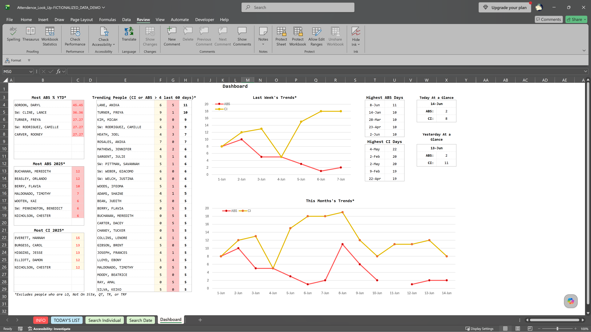

Overview

Redesigned a manual attendance reporting process into an automated analytics dashboard that transformed daily attendance records into actionable insights for management and HR.
Problem
The administration team would manually generate an attendance report every morning for management and HR by copying information from our Master Employee Workbook into a new, blank Excel file. Since each admin had their own way of doing so, the reports varied depending on who prepared them. This process was also repetitive and produced little more than the raw attendance data.
What stood out to me the most wasn’t the amount of copying and pasting, though; it was also that the report wasn’t actually helping management make decisions.
Patterns, such as repeated call-ins, high absence rates, employees approaching HR thresholds, or attendance issues with specific crews, weren’t obvious unless someone manually noticed them. We were sending data when we should have been sending easy-to-read information.
My Role
I designed and built a reporting system that standardized the daily attendance process and turned raw attendance records into more meaningful operational reporting.
Instead of simply recreating the existing report, I rebuilt the workflow around the questions that management and HR actually needed answered.
Because I used the workbook every day, it continued to evolve as I identified new opportunities to automate tasks and improve reporting.
Solution
I designed an Excel reporting system with multiple connected tabs that automated much of the daily attendance reporting. I also added analytics that didn't exist before, which greatly benefited management and HR.
Some of the key features of the workbook were:
- A simplified and standardized data-capturing system, as much of the information capturing could be automated.
- Automated retrieval of important employee information using XLOOKUPs.
- Automated calculations of attendance percentages, yearly CI and ABS totals, employment duration, and HR CI eligibility thresholds.
- Conditional formatting that visually highlights specific situations or potential issues instead of solely relying on reading all the monocolor raw data.
- Dynamic reports that separated attendance information into different categories, such as separating CIs from ABS, dayshift from nightshift, and two different companies.
- A dashboard to overview everything that had PivotCharts, Dynamic Arrays, LET functions, FILTER, SORTBY, COUNTIFS, and other advanced Excel functions to identify attendance trends, employees with the highest absence rates, repeat attendance issues, and daily, weekly, and monthly attendance summaries.
- Search tools that allowed instant retrieval of information on an employee's attendance history, rather than needing to search the Master Workbook manually.
- A standardized reporting format that produced consistent daily reports regardless of who was generating them.
Although Power Query could have automated part of this workbook as I have done before, I intentionally focused this project on improving the reporting and decision-making process.
Result
My workbook significantly reduces the repetitive, manual copying and formatting that admins previously had to do to produce the daily attendance report sent to management and HR. I also added substantial new information to the previous report.
Instead of simply reporting the attendance, my system also highlighted trends and automatically flagged employees approaching or breaching HR thresholds. It made potential issues much easier to recognize with visual indicators and analytics.
My project also demonstrated how operational reporting could move beyond simply recording data to supporting better business decisions.
Skills Demonstrated
Business Process Improvement
- Challenged an established reporting process and then redesigned it around the information management and HR actually needed.
- Standardized daily reporting to improve consistency and reduce repetitive work
Problem Solving
- Identified that management was receiving raw attendance data instead of actionable, easy-to-read insights.
- Designed automated calculations and reporting tools that showed trends requiring HR follow-up.
- Continually refined the tool by identifying new opportunities for improvement through daily use.
Data Analysis & Decision Support
- Built dashboards and analytics that transformed attendance records into operational insights.
- Used visual indicators and HR rules to highlight patterns, thresholds, and recurring problems.
Dashboard and Report Design
- Created dashboards, search reports, and a standardized reporting template that made attendance information easier to understand and investigate.
Technical Skills
- Microsoft Excel
- Advanced formulas (LET, FILTER, SORT, SORTBY, UNIQUE, XLOOKUP, COUNTIFS)
- Dynamic Array Functions
- PivotTables & PivotCharts
- Conditional Formatting
- Data Validation
Key Takeaway
For me, the biggest improvement wasn’t just automating a report; I wanted to challenge what the report communicated. Instead of just sending management a spreadsheet full of raw data attendance records, I built a process that highlighted trends and identified potential problems. This new system helped management and HR make better and easier decisions.
The System in Action
TITLE
- LIST